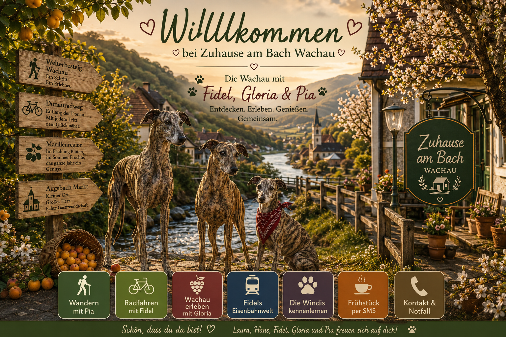

Zur Anreise nach Aggsbach Markt
Maria Laach → Zuhause am Bach
Mühldorf → Zuhause am Bach

Schön, dass ihr da seid. Diese App ist kein kaltes Hotel-Verzeichnis. Sie ist euer kleiner Wachau-Kompass – persönlich, praktisch und mit drei Windhund-Nasen geprüft.
Hinweis: Öffnungszeiten, Fähren, Bahnzeiten und Wetter bitte vor dem Start aktuell prüfen. Die Wachau ist schön – aber sie hält sich nicht immer an Pläne.
Zuhause am Bach
Aggsbach Markt 82
3641 Aggsbach Markt
Wachau, Niederösterreich
Für Welterbesteig-Gäste bieten wir auf Anfrage einen einfachen Gepäcktransport an. Bitte spätestens am Vorabend mit Hans und Laura abstimmen.
Maria Laach → Zuhause am Bach
Mühldorf → Zuhause am Bach
Zuhause am Bach → Emmersdorf
Zuhause am Bach → Melk
Gepäck bitte gut sichtbar bereitstellen. Name, Zielort und Telefonnummer dazulegen. Uhrzeit wird individuell vereinbart.
Nur nach Verfügbarkeit.Diese Links bitte vor Wanderung, Radtour oder Bahn-/Busfahrt öffnen. Zeiten und Verbindungen können sich ändern.
Übersicht mit Etappen, Karten und GPS-Daten.
ÖffnenDirekt relevante Welterbesteig-Etappe ab Aggsbach Markt.
ÖffnenOffizielle Übersicht zum Donauradweg und den Etappen.
ÖffnenBus, Bahn und öffentliche Anreise in die Wachau.
ÖffnenSaisonale Bahnzeiten vor dem Ausflug prüfen.
ÖffnenAktuell prüfen, wer heute ausgesteckt hat. Heurige ändern ihre Öffnungs- und Aussteckzeiten laufend.
🍷 Heute offene Heurige prüfenFidel, Gloria und Pia kennenlernen und Bücher entdecken.
Zum BuchshopPias Wanderwelt
Pia empfiehlt: nicht gleich losstürmen. Wasser auffüllen, Wetter prüfen, Schuhe festziehen – und dann die Wachau atmen.
Wald, Stille, Wallfahrtsort und schöne Wachau-Höhen. Ideal für Gäste, die Natur und Geschichte verbinden möchten.
Vor Start: aktuelle Route/Wetter prüfen.Wichtig: Aggstein liegt am Südufer. Von Aggsbach Markt ist die Ruine nicht einfach direkt am Nordufer erreichbar. Sinnvolle Varianten: über Spitz/Arnsdorf-Fähre oder über die Brücke bei Melk.
Fähre, Bus/Bahn oder Rücktransport vorher aktuell prüfen.Für ausdauernde Wanderer mit Blick auf Donau, Wälder und Kultur. Nicht unterschätzen.
Etappenlänge und Rückfahrt prüfen.Für müde Beine: Bach, Ort, Donau, ein ruhiger Blick – manchmal ist klein genau richtig.
Perfekt nach Anreise.Fidel am Donauradweg
Fidel sagt: Wer mit dem Rad kommt, braucht drei Dinge – sicheren Abstellplatz, Wasser und einen guten Plan für die Rückfahrt.
Aggsbach Markt liegt günstig für Radgäste in der Wachau. Plant genug Zeit für Fähren, Pausen und Fotostopps ein.
Schöne Tour für Kulturfreunde. Stift Melk ist ein Klassiker – stark, barock und nicht zu übersehen.
Wein, Donau, Wachau-Bilderbuch. Sehr gut für Genussradler.
Eine Donauquerung macht aus einer normalen Tour ein kleines Erlebnis. Betriebszeiten unbedingt aktuell prüfen.
Glorias Wachau
Gloria mag es ordentlich: erst Aussicht, dann Kultur, dann etwas Gutes im Glas oder auf dem Teller.
Heurigenkalender Aggsbach: Aktuell prüfen, wer heute ausgesteckt hat. Bitte nicht blind losgehen – in der Wachau entscheidet oft der Kalender, nicht der Hunger.
🍷 Heute offene Heurige prüfenRestaurant Genussterrasse – Öffnungszeiten vor Besuch prüfen; Dienstag/Mittwoch sind laut Betreiber häufig Ruhetage.
Genussterrasse prüfenFür größere Einkäufe bitte Melk oder Spitz einplanen. Emmersdorf wird nicht mehr als Nahversorger empfohlen. Öffnungszeiten bitte vor der Fahrt aktuell prüfen.
Blüte, Ernte, Marmelade, Knödel – die Wachau riecht je nach Jahreszeit anders.
Aggstein, Melk, Dürnstein: große Namen, große Bilder.
Der beste Moment ist oft der stille: Donau, Licht, ein paar Minuten nichts müssen.
Fidels Eisenbahnwelt
Hier kommt Hans’ Welt hinein: Bahn, Strecke, Geschichten, Signale, alte Bahnhöfe und der besondere Blick eines Eisenbahners.
Eine der schönsten Möglichkeiten, die Wachau ohne Auto zu erleben. Fahrplan saisonal prüfen.
Wenn historische Züge fahren, wird die Wachau ein bisschen Märchenbuch.
Kleine Orte, große Erinnerungen – ideal als eigener späterer Bereich.
Fidel erklärt Bahn einfach: Warum Signale wichtig sind und warum ein Zug nicht einfach ausweichen kann.
Wenn ihr nach Wandertag oder Radtour nicht mehr groß ausgehen möchtet, können wir euch auf Vorbestellung bei Zuhause am Bach mit einfachen regionalen kalten Gerichten verwöhnen.
Bitte rechtzeitig vorbestellen. Angebot nach Verfügbarkeit. Die SMS wird vorbereitet und kann vor dem Absenden geändert werden.
Bitte möglichst am Vorabend senden. Die SMS wird automatisch vorbereitet – ihr könnt sie vor dem Absenden ändern.
Der große, ruhige Galgo. Eisenbahnfreund, Wachau-Beobachter und Chef der Gelassenheit.
Elegant, aufmerksam und mit Sinn für Ordnung. Sie zeigt die schönen Seiten der Wachau.
Kleines Whippet-Mädchen, neugierig, flink und immer bereit für ein neues Abenteuer.
Die Geschichten der Windis gehören zu Zuhause am Bach. Gäste können die Bücher direkt online entdecken.
Nach der Abreise bleibt die Wachau nicht weg – sie wartet nur. Wer möchte, bekommt Neuigkeiten zu freien Terminen, Marillenblüte, Advent, neuen Windis-Geschichten und besonderen Wachau-Momenten.
Per E-Mail vormerkenLaura & Hans Prem
0664 6437526
johannprem@hotmail.com